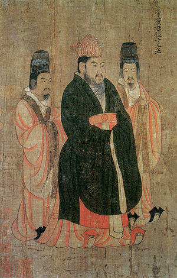

Important people in the Goguryeo-Sui War
There were several people who were detramental to the outcome of this conflict,
but I am only going to list information about Three people who were crutial throughout the war.
1.Yang Di
Emporer Yang Di, or Emporer Yang Guang, Was the second and last emporer of the short lived Sui Dynasty.
He lived from 569 B.C. to 11 April 618 B.C. and it is assume that he killed his father and broher, then claiming the throne in 604
he is mainly know for commisioning the grand canal, connecting north and South china, and rebuilding parts of the great wall
His expaditions and conquest of china's neibors brought the Dynasty a vast territory, but solders were dying left and right.
From diseases like malara to malnutrton people were dying, nd fund were lowering.
Eventally, Emporer Yang Di set his sights on korea, and after numerous attepts of controllng the korean pennensula
More namely, Goguryeo (refer to the map on the battles and events tab).
these attempts made china lose wealth and lives,
this caused the people to rebel. Not long after, he was strangles to death by on of his genrals name Yuwen Huaji
2 Eulji Mundeok

Euliji Mundeok, thought to be born in the mid 6th century
Euliji was a talented man. After joining, he rose throgh ranks and became the "Supreme commander".
When emporer Yang Di assembled and army of oer one million, it was Eulji's job to deafend the naton.
Due too the strategic plnning of Euliji Mundeok and his efforts, Goguryeo was still free.
3.King Yeongyang

Born in 566,and made Yeongyang s the 26th kng of Goguryeo. He is best known for fending off the Sui in the Goguryeo-Sui wars,
Including The four Sui campains from emporers Yang Di and Wen Di and the Great Assult (when Yand Di sent over 1 million troops to conuer Goguryeo.)
It is said that he assended to the throne after his father's death in 590 and that he passed away in 618.
Cute cat no.2: